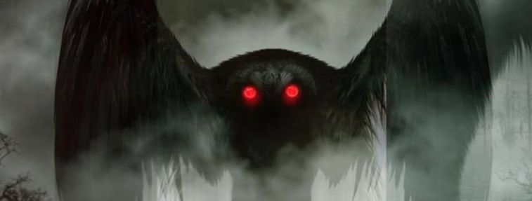

<!DOCTYPE html>
<html lang="en"></html>
<head>
    
    <meta charset="UTF-8">
    <meta name="viewport" content="width=device-width, initial-scale=1.0">
    <title>The Jaeger Files</title>
<link rel="stylesheet" href="jaeger.css">
</head>
<body>
    <div class="header">
        <div class="nav">
            <ul>
                <li><a href ="entlist.html">Entity List</a></li>
                <li><a href ="index.html">Home</a></li>
                <li><a href ="sight.html">Sighting Locations</a></li>
                <li><a href ="loc.html">Entity Locations</a></li>
                <li><a href ="date.html">Sighting Dates</a></li>
            </ul>
        </div> 
        <h1>The Mothman</h1>
        <p> 
            The Mothman appeared in Point Pleasant, West Virginia. U.S.A. on the 12th November 1966. The last sighting was on the 15th December 1967.
        </p>
        <p>
            A group of Gravediggers were the first to see it, it appeared as a man flying low through the trees. They said his eyes 'glowed red' and had 'ten foot wings'. This two items have now become synonymous with the famous Mothman.
        </P>
        <p>
            If you have know of any further information, images,dates or  sightings then please contact us so we can update our database.
        </p>
    </div>
    <div class="moth">
    
    </div>
</body>
</html>